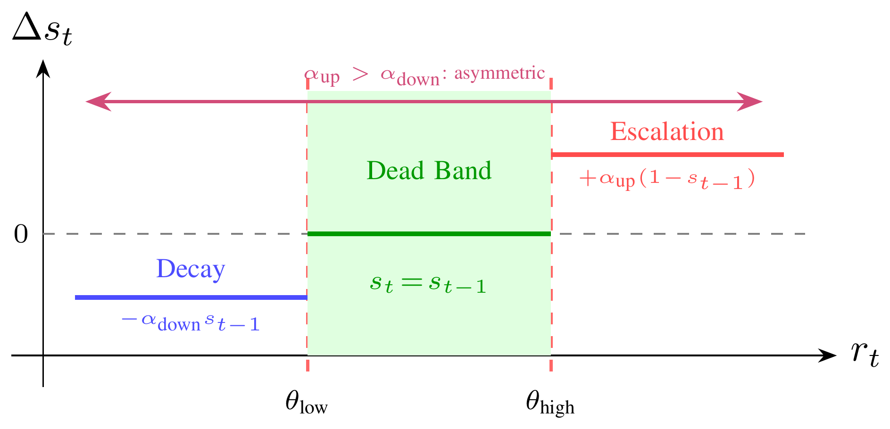
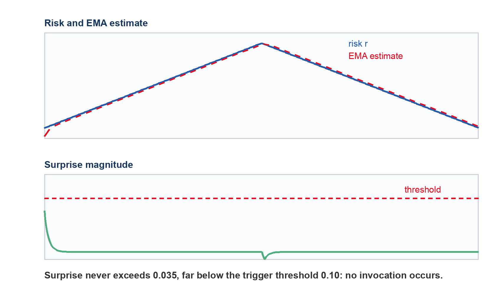

IEEE ITSC 2026 · Accepted
Tonic Meta-Control for Adaptive Safety-Compute Allocation via Persistent Vigilance Dynamics
How a car decides when to think harder about the road ahead — and how much harder — instead of running expensive reasoning at every step.
Kyungtae Han, Yitao Chen, Nejib Ammar, Onur Altintas
Toyota Motor North America, InfoTech Labs
In short
A self-driving car usually needs only a cheap reflex: watch the gap to the car ahead and brake if it closes. Occasionally it needs something more expensive: check the next lane over, anticipate a cut-in, consider changing lanes. An onboard computer cannot afford the expensive option at every control step, so something has to decide when to spend it. This project is a small controller that makes that call. We tested it on scripted risk traces and in a closed-loop highway simulator, against rules that are always cheap, always expensive, or that react only to sudden surprise. It uses noticeably less compute on quiet driving; it is not uniformly safer in every scenario; and it will miss a hazard that builds up too gradually to look surprising.
Should we think harder right now?
Answered by a fast check for sudden change. If the road just got worse than expected, it flips the switch on. It only decides whether to act — never how much.
How much thinking is enough?
Answered separately, by a slow running memory of how tense the last stretch of driving has been. A road that has been busy for a while earns a deeper look than one that was calm a moment ago.


Summary
Problem, approach, and what we ran
Always using the cheap reflex leaves the car under-prepared in dense traffic. Always using the expensive look-ahead burns onboard compute on an empty highway. Reacting only to sudden surprise forgets that a stretch of road has been busy for a while, and thrashes when a noisy risk score sits right on a threshold.
Split the decision. A slow running memory of risk — we call it the tonic state — sets how deep the reasoning goes. A separate fast surprise check — the phasic signal — decides whether to run it at all. A hold band in the middle of the risk range keeps the memory steady instead of chattering.
Five scripted risk patterns, then a closed-loop highway simulator in sparse traffic, dense traffic, and a merge. Six allocation rules were compared, all sharing the same perception, the same risk score, and the same underlying driving controller. The only thing that differs between them is the rule that decides how to spend compute.
Method
How It Works
On every timestep the controller does the same small amount of bookkeeping — update the memory, update the surprise estimate — and then either invokes the chosen mode or does nothing extra. The bookkeeping itself is a comparison and a multiply-add, so it is negligible next to the reasoning it is scheduling.
- Keep a slow memory of how risky the road has been. Each timestep the current risk score nudges a single running value up, down, or not at all. Inside a middle band it is held exactly, so sensor noise near a threshold cannot flip the mode. It climbs faster than it decays — a deliberate bias toward staying alert, since it is cheaper to be over-prepared than under-prepared.
- Watch separately for things getting suddenly worse. Compare the current risk against a short running average of recent risk. Fire only if the gap is large, risk is still rising, and enough time has passed since the last firing. This is purely an on/off switch — it never decides cheap versus expensive.
- Put the two together. When the surprise check fires, the slow memory is what says which mode to run. In cheap mode the car watches the gap to the vehicle ahead and brakes. In expensive mode it looks further ahead and into the adjacent lane, so a cut-in is visible, and a lane change becomes available.

Experiments
What We Measured



What this is, and what it is not
Tonic meta-control is a compute scheduler for deliberation. It sits above the driving stack and decides when the expensive reasoning path is allowed to run, and how deep it should go when it does. It is not a new object detector, not a new risk estimator, and not a new driving policy — every method in the comparison uses the same perception, the same risk score and the same underlying controller, and the only thing that changes is the rule that spends compute. The evaluation is in simulation, with a hand-built risk signal and fixed parameters; validating it against a higher-fidelity simulator and a real learned reasoning module is still ahead of us.
The paper’s own abstract, in its original technical wording.
Autonomous driving systems that incorporate deliberative reasoning modules, such as multi-step planners or large language models, face a fundamental resource allocation problem because safety demands deep inference under risk while embedded automotive platforms impose strict compute and latency budgets. We propose tonic meta-control, a mechanism that maintains a persistent vigilance state (the tonic signal, updated every timestep) via asymmetric piecewise dynamics with dead-band hysteresis. A dead-band guarantees exact state hold during boundary oscillations, providing formal guarantees on boundedness and monotonic transitions without continuous-integrator drift, and maps risk regimes to deliberation levels that govern compute allocation when rapid prediction-error surprise (the phasic signal) fires. On a synthetic testbench spanning five risk scenarios and in the highway-env driving simulator, tonic meta-control achieves 25–50% compute reduction versus phasic-only triggering, scaling to 46–52% under superlinear compute cost regimes. A memoryless threshold ablation isolates the contribution of accumulated vigilance history, confirming its advantage on transient and cyclic risk patterns. While reducing computational overhead on interactive traffic, tonic meta-control supports safety-aware autonomous reasoning on resource-constrained embedded platforms.
Cite
Citation
@inproceedings{han2026tonic,
title = {Tonic Meta-Control for Adaptive Safety-Compute
Allocation via Persistent Vigilance Dynamics},
author = {Han, Kyungtae and Chen, Yitao and
Ammar, Nejib and Altintas, Onur},
booktitle = {2026 IEEE 29th International Conference on
Intelligent Transportation Systems (ITSC)},
year = {2026}
}